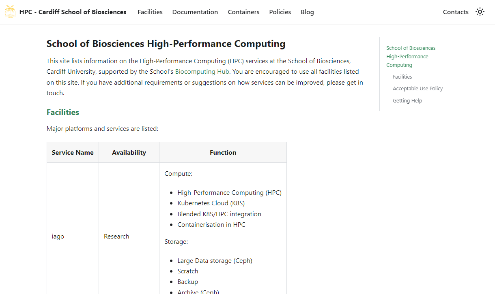
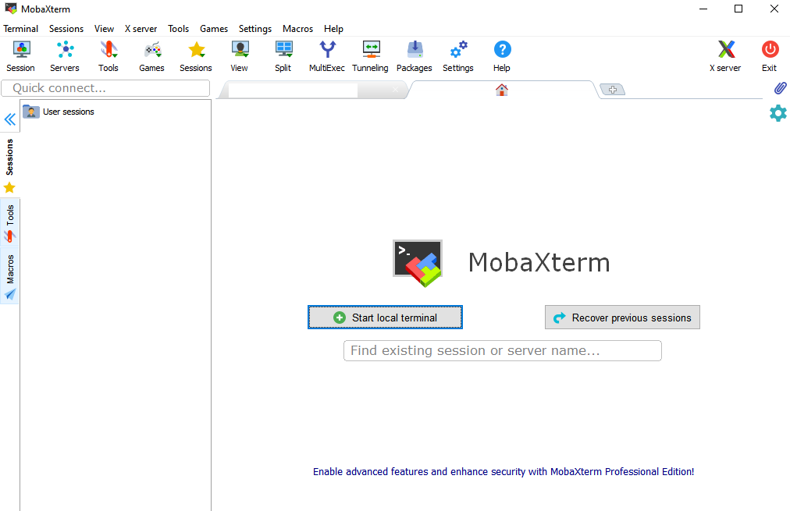
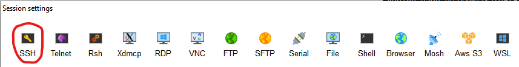
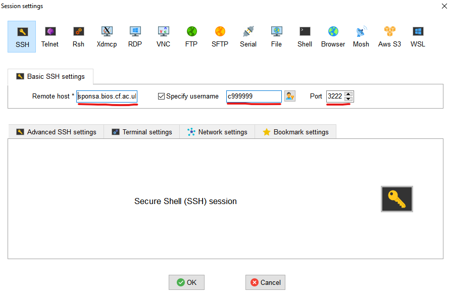
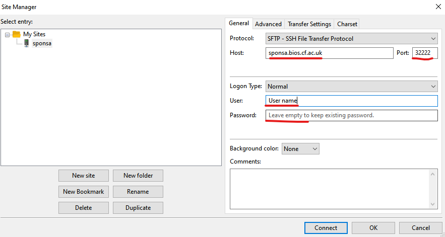
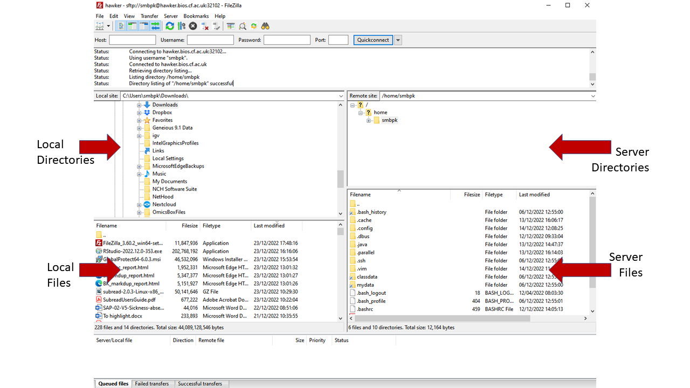

Basics of HPC and HPC vs Personal Cloud provision
To access any Cardiff University HPC or personal Cloud resources you will need to install and login to the University VPN - see Instructions below
HPC systems are large multi-processor large RAM ‘computer’ that are installed in data centres. usually users are provided with a log-in to a shared HPC-system with strictly control access writes and defined quotas. To run your informatic tasks you would configure a script to send your job to a ‘queuing’ program that coordinates the processing request of all the users on the system. In this way the system can support large numbers of users but you need to wait for your place in the ‘queue’ for your task to be performed. Although you can do simple task - manipulate files (copy, rename ect) without sending a queue script most tasked you would need to configure your queue script and send to the job to the queue - this can be very tedious when learning’s to code since even script with error would need to wait for the request to be queued.
To avoid the ‘queues’ we provide person cloud systems to each person on the course allowing the to interactively interact with the HPC system. To do this we create a container which contains the equivalent of a ‘virtual machine’ (VM) in the cloud, we use a system called kubernetes to create these container based virtual machines, where each user has dedicated processor, RAM, storage and their own environment so they can interactively learn to use a linux system. Because we are having to reserve a proportion of the server for each user we can only allocate a limited number of processor and RAM to each user - usually this is 8 Processor and 16 Gb RAM but check with you course organiser.
Similar ‘containers’ can be accessed using AWS cloud services (https://aws.amazon.com/health/genomics/) or through academic services such as CLIMB (https://www.climb.ac.uk/). AWS cloud does provide some educational free cloud processing but when these free credits are over you would need to pay for processing and storage - this can very quickly get expensive. CLIMB always academic registration if you are supported by specific research council funding.
Personal HPC and HPC clusters
To access any Cardiff University HPC or personal Cloud resources you will need to install and login to the University VPN - see Instructions below
As part of the teaching provision at Cardiff University you will be provided with specific ‘logins’ to your own kubernete VM. You may also be given access to our teaching HPC cluster or our research HPC system.
Check with you instructors which system are available to you
kubernete VM
You will be provided with three pieces of information the host (or server) name, your user name (usually your staff ID or your student ID including the the ‘small letter’ prefix), a port number and a randomly generated pass phase. Here are some examples (user names and pas phases are fictitious).
Host Name: hawker.bios.cf.ac.uk sponsa.bios.cf.ac.uk
Username (student numbers usually have a small letter and 7 digits): c9999999 or sbixxx
Port (5 digit number): 32222
Password: hard_phase_remember
You may have received an email where the information is presented as a code block:
ssh c9999999@hawker.bios.cf.ac.uk -P 32222
^ ^ ^
username host portHPC cluster access
If you are provided with access either teaching or research HPC systems you will only be provided with a host or server name - you username and password will be your Single Sign-On (SO) for the University - your student/staff number and your standard password.
server currently used include:
Host Name: hawker.bios.cf.ac.uk sponsa.bios.cf.ac.uk
With standard HPC teh port number is always 22
VPN
Cardiff University uses different VPNs for Staff and Students (UG & Masters). Also some postgraduates (PhDs) qualify and staff some masters and MSc are registered on the student VPN - the VPN does not matter but you need to use the correct VPN or things will not work - the VPN software will install and you will think all is good but you will not achieve a connect. To find the correct instructions login to the intranet and search for VPN. Here are the current links which have installation instructions:
Student VPN (OpenVPN)
https://intranet.cardiff.ac.uk/students/it-support/wireless-and-remote-access/remote-access/vpn-access-for-undergraduates
Staff VPN (Global Protect)
https://intranet.cardiff.ac.uk/staff/supporting-your-work/it-support/wireless-and-remote-access/off-campus-access/virtual-private-network-vpn
Once you have installed the VPN and connected test by going to this site:
http://hpc.bios.cf.ac.uk
 
R-studio
If you have been supplied with a cloud container we will have also provided you with a Rstudio browser based interface. I would suggest testing your login with the browser based Rstudio since this provides a straight-forward way of testing you login without the need for any software installs.
To access any Cardiff University Cloud based Rstudio you will need to install and login to the University VPN - see Instructions above
Enter your cloud host name and username name in you browser navigation bar e.g.:
https//sponsa.bios.cf.ac.uk/c9999999
^ ^
Host/server user nameYou should now see the following screen:

Now reenter you username and input the pass phase you have been provided. You should now see the RStudio page. Note the file listed in the right hand lower tab are files on your server not your local computer.

You are now successful logged on to the server - so you know that your account and password work !!
SSH using Mobxterm - Connecting to server on PC
MobXterm a free SSH client that has a built SFTP for file transfer, X-forwarding (graphical emulation) for using remote graphical applications and allows you to open multiple windows to your server. You can download the free version of MobXTerm from there web-site. I suggest downloading and installing the ‘Installer Addition’ as it will fully install on your system - the portable version provide a simple executable (exe) that can be placed on a data pen and used in machine where you do not have administrator privileges to install software.
Follow the installation instructions and you should be faced with the follow window:

Now you want to create a session, this can be done following these easy steps:
- Select session ICON

- Select SSH icon

- Configure your SSH connection by filling in boxes for -Host -User and -Port
NB - the three elements you need to complete are underlined in red in the image. NB - for standard HPC the port leave the port at the default value of 22

4. Enter your passphase
You will NOT see any typing - this is a security feature just continue typing

Once you have entered you password and it has been accepted you MAY be asked to save a master password - this you can set to what you wish. You will only be asked for this if you use the application on another computer / account (if you are moving from one networked PC to another in the classroom.
Once created your ‘session’ will be saved in the left hand menu and you just have to click on it to connect in future.
SSH using terminal - Connecting to server on Mac
HPC server - both your personal cloud as well as HPC systems - are based on a Unix Operating System called Linux. Mac OS is also developed on this system - so connecting on a Mac is very simple. First you have to find and open your Terminal - I think the easiest way is to search for it in finder but if you don’t find this easy there’s a wiki entitled - Open-a-Terminal-Window-in-Mac.
Once you have your terminal open simply type (for standard HPC - not kubernetes - theer is no need to define the port with -P):
ssh [user]@[host] -P [Port]
#a fictious example work be
ssh c99999@sponsa.bios.cf.ac.uk -P 32222Then enter you password and you are in - you can tell you are there because the test preceeding your cursor changes and shoudl look like (the numbers will probably be different for you):
[user@ssh-user-894cfb776-88kzg ~]$Unfortunately the standard SSH interface does not support X-forwarding for graphical applications. There is a mac application called (Xquartz)[https://www.xquartz.org/] that you can install and when it is running you can create a X-11 session by simply adding -X to your login so your login would be:
ssh -X [user]@[host] -P [Port]
#a fictious example work be
ssh -X c99999@sponsa.bios.cf.ac.uk -P 32222Xquartz is open source software and Mac DO NOT SUPPORT it and it can be challenging to get working - newer Mac often do not support it as the open source developers haven’t kept up with change sin the OS - play if you want too but it can be frustrating.
sFTP using Mobxterm
MobXaterm has a built in SFTP function. When you open you session a folder structure appears down the left hand side of the screen. This can be useful for navigating and for opening files without the need to download them - some people also use the built in text editor to open and edit there script but I do not recommend this use Nano or Vim (vi) it is much better.
Use the arrows above the SFTP windows to up / down load file - you can also drag and drop files using this window.

sFTP using Filezilla
(Filezilla)[https://filezilla-project.org/] is a open source program that works on all platforms and support multiple upload and download options including SFTP.
To configure Filezilla follow the steps below and this will create a saved profile you can go back to:
- Open and select profile icon

2. Configure your SFTP profile
Remember for standard HPC the SFTP port will default to 22.

Select Connect and you are done - you can return to this session next time you want to transfer
- Drag and drop your files from local to server (remote host) system

sFTP using Cyberduck
[Cyberduck][https://cyberduck.io/download/] is another free file transfer application that supports all type of file transfer including SFTP and some people prefer it as it has a very simple interface.
After downloading and installing the application open the transfer window by using the following steps:
- Open A Cyberduck connection

- Configure the connection - complete all things underlines
Use your port number or if standard HPC this is will be 21

3. You can now navigate around the server and drag and drop file to and from server